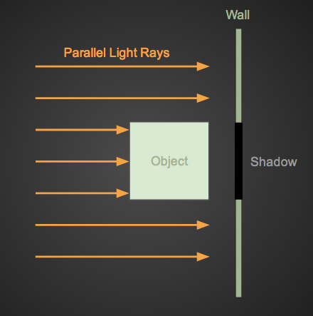
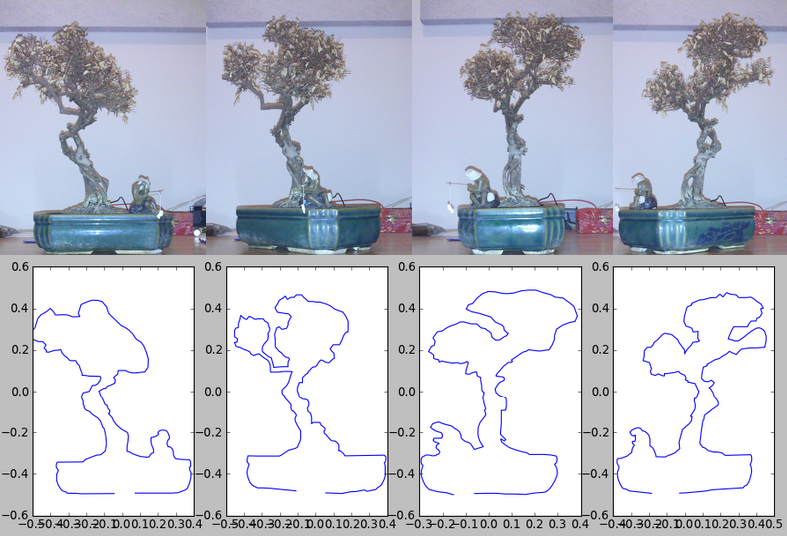

{kind=link}
If you'd rather read python than english you can go straight to the code on github: https://github.com/jminardi/volume-from-shadow
Motivation
I was having fun casting shadows with my laser pointer the other day. I began to wonder about the 3D information that was embedded in the 2D shadow. Given enough shadows of an object, could you recreate it? What information is lost, what is preserved?
I needed to apply a few constraints to simplify the system:
- Let the light rays be parallel to each other
- Let the light fall perpendicular to the shadowed surface.
Parallel light rays can be thought of as coming from an infinitely far source. Having the rays come in orthogonal to the surface allows me to ignore any perspective distortions like the keystone effect. I've drawn up a simple diagram to explain what I am talking about.

Now imaging rotating that object and watching the shadow change on the wall.
These musings led to some python code that implements a sort of shadow back projection - recreating a 3D object from a series of shadows taken at different rotations. The general algorithm goes something like this:
points = generate_random_cloud()
for each shadow:
points.remove_impossible_points_for_shadow(shadow)
The basic idea is to iterate over all shadows removing the points that would fall outside the shadow. The points that remain after all iterations fall inside the 3D volume consistent with all the given shadows. In my implementation I assumed shadows taken at equal intervals of rotation about the z-axis, but you could easily specify the object's angle of rotation for each shadow.
Implementation
import numpy as np
from matplotlib import mlab
def whittle(cloud, polygons):
"""
Parameters
----------
cloud : ndarray
Mx3 array containing the point cloud. Columns are x, y, and z
Should be centered about the origin
polygons : list of ndarray
Each array is Mx2 and represents a series of x, y points defining a
polygon.
Returns
-------
cloud : ndarray
Mx3 array representing the points from the original cloud that are
contained inside the 3d volume defined by the series of polygons
"""
# Divide half the circle evenly among the polygons
angle = np.pi / len(polygons)
rotation_matrix = get_rotation_matrix(angle)
for polygon in polygons:
# Find and remove the points that fall outside the current projection
mask = mlab.inside_poly(cloud[:, 1:], polygon)
cloud = cloud[mask]
# Rotate the cloud and go to the next projection
cloud = cloud.dot(rotation_matrix)
return cloud
def get_rotation_matrix(angle):
# Rotate about the z-axis
cos, sin = np.cos(angle), np.sin(angle)
rotation_matrix = np.array([[cos, sin, 0],
[-sin, cos, 0],
[0, 0, 1]])
return rotation_matrix
As you can see there is really not that much going on here. This code simply
masks out the points that fall outside the shadow using inside_poly(),
rotates the cloud, then masks again. You may notice you don't need the whole
circle, two profiles taken 180 degrees apart should be mirror images of each
other - giving no new information.
For example, I could define two diamonds and run them through the wittle
function. The result should be two pyramids touching at their bases. One
diamond is defines by its vertices below.
polygon = np.array([[1, 0],
[0,-1],
[-1, 0],
[0, 1]])
Results
Two of the diamonds above produce the following 3D volume:

Stereoscopic image, cross your eyes to view. (tutorial)
So it works for simple shadows and objects! I wanted to try something a little more difficult, so I decided to test the algorithms on my (dead) bonsai tree.

I took four photographs at (hopefully) 45 degree increments. I then wrote a quick tool that allows me to click on an image to define a polygon. I used it to define the profile of each of the four images. You can see the images and profiles below.

Running the 4 polygons above through the function produced the following point cloud:

Click for high res GIF. Stereoscopic image, cross your eyes to view.
Conclusion
I could imaging automating the polygon extraction with some image processing. Using a lazy susan and a cheap web cam you could easily import your objects into a video game like Minecraft.
I was pleasantly surprised with these results, however there are a few limitations. This method can never recreate concave shapes such as a bowl. Any concavity will simply be filled in, as that information is lost in the 3d -> 2d projection.
While this algorithm's output is great for human consumption, a point cloud is not the optimal data store for a 3d volume. I played around a bit with being a little more clever than random when creating the cloud, which you can see here , but I think this is barking up the wrong tree. I have a few ideas involving more complex polygon intersection algorithms that would result in a mesh grid rather than a point cloud. Maybe someday I'll try to get those spelled out in python.
Questions? Hit me up on twitter
You can find all the code on github: https://github.com/jminardi/volume-from-shadow
Check out the discussion on Hacker News where you can find links to similar research.